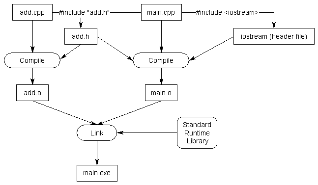

2.11 — Fichiers d'en-tête
Dans la leçon 2.8 -- Programmes composés de plusieurs fichiers de code, nous avons vu qu'un programme peut être réparti sur plusieurs fichiers. Nous avons aussi vu que les déclarations anticipées permettent au code d'un fichier d'accéder à des éléments définis dans un autre fichier.
Quand un programme ne comporte que quelques petits fichiers, ajouter manuellement quelques déclarations anticipées en haut de chaque fichier n'est pas trop pénible. En revanche, à mesure que le programme grandit (avec davantage de fichiers et de fonctions), devoir ajouter à la main un grand nombre de déclarations anticipées (potentiellement différentes) en haut de chaque fichier devient extrêmement fastidieux. Par exemple, si vous avez un programme de 5 fichiers, dont chacun nécessite 10 déclarations anticipées, vous devrez copier-coller 50 déclarations anticipées. Imaginez maintenant 100 fichiers nécessitant chacun 100 déclarations anticipées : cela ne passe tout simplement pas à l'échelle !
Pour résoudre ce problème, les programmes C++ adoptent en général une approche différente.
Les fichiers d'en-tête
Les fichiers de code C++ (avec l'extension .cpp) ne sont pas les seuls fichiers que l'on rencontre couramment dans les programmes C++. L'autre type de fichier s'appelle fichier d'en-tête (header file). Les fichiers d'en-tête portent généralement l'extension .h, mais on en rencontre parfois avec l'extension .hpp, ou même sans extension.
Par convention, les fichiers d'en-tête servent à regrouper un ensemble de déclarations anticipées liées entre elles, afin de les transmettre à un fichier de code.
Point clé
Les fichiers d'en-tête nous permettent de placer les déclarations à un seul endroit, puis de les importer partout où nous en avons besoin. Cela peut économiser beaucoup de frappe dans les programmes composés de plusieurs fichiers.
Utiliser les fichiers d'en-tête de la bibliothèque standard
Considérez le programme suivant :
#include <iostream>
int main()
{
std::cout << "Hello, world!";
return 0;
}
Ce programme affiche « Hello, world! » dans la console à l'aide de std::cout. Pourtant, ce programme ne fournit jamais de définition ni de déclaration pour std::cout. Comment le compilateur sait-il alors ce qu'est std::cout ?
La réponse est que std::cout a été déclaré par anticipation dans le fichier d'en-tête « iostream ». Lorsque nous écrivons #include <iostream>, nous demandons au préprocesseur de copier tout le contenu du fichier nommé « iostream » (y compris les déclarations anticipées de std::cout) dans le fichier qui effectue le #include.
Point clé
Lorsque vous #include un fichier, le contenu du fichier inclus est inséré à l'endroit de l'inclusion. C'est un moyen commode d'importer des déclarations depuis un autre fichier.
Imaginez ce qui se passerait si l'en-tête iostream n'existait pas. Partout où vous utiliseriez std::cout, vous devriez taper ou copier manuellement toutes les déclarations liées à std::cout en haut de chaque fichier qui l'utilise ! Cela exigerait de connaître en détail la manière dont std::cout est déclaré, et représenterait un travail considérable. Pire encore, si un prototype de fonction était ajouté ou modifié, il faudrait mettre à jour à la main toutes les déclarations anticipées.
Il est bien plus simple d'écrire simplement #include <iostream> !
Utiliser les fichiers d'en-tête pour transmettre les déclarations anticipées
Reprenons maintenant l'exemple évoqué dans une leçon précédente. Nous avions deux fichiers, add.cpp et main.cpp, qui ressemblaient à ceci :
add.cpp :
int add(int x, int y)
{
return x + y;
}
main.cpp :
#include <iostream>
int add(int x, int y); // déclaration anticipée à l'aide d'un prototype de fonction
int main()
{
std::cout << "The sum of 3 and 4 is " << add(3, 4) << '\n';
return 0;
}
(Si vous recréez cet exemple depuis le début, n'oubliez pas d'ajouter add.cpp à votre projet afin qu'il soit compilé.)
Dans cet exemple, nous avons utilisé une déclaration anticipée pour que le compilateur connaisse l'identifiant add lors de la compilation de main.cpp. Comme nous l'avons déjà dit, ajouter manuellement une déclaration anticipée pour chaque fonction utilisée qui se trouve dans un autre fichier peut vite devenir fastidieux.
Écrivons un fichier d'en-tête pour nous décharger de cette tâche. Écrire un fichier d'en-tête est étonnamment simple, car il ne comporte que deux parties :
- Une garde d'en-tête (header guard), que nous détaillerons dans la prochaine leçon (2.12 -- Gardes d'en-tête).
- Le contenu proprement dit du fichier d'en-tête, qui doit être constitué des déclarations anticipées de tous les identifiants que nous voulons rendre visibles aux autres fichiers.
Ajouter un fichier d'en-tête à un projet se fait de la même manière qu'ajouter un fichier source (vu dans la leçon 2.8 -- Programmes composés de plusieurs fichiers de code).
Si vous utilisez un EDI, suivez les mêmes étapes, mais choisissez « Header » au lieu de « Source » lorsqu'il vous est demandé de choisir. Le fichier d'en-tête doit apparaître dans votre projet.
Si vous travaillez en ligne de commande, créez simplement un nouveau fichier avec l'éditeur de votre choix, dans le même répertoire que vos fichiers source (.cpp). Contrairement aux fichiers source, les fichiers d'en-tête ne doivent pas être ajoutés à votre commande de compilation (ils sont inclus implicitement par les instructions #include et compilés dans le cadre de vos fichiers source).
Bonne pratique
Préférez le suffixe .h pour nommer vos fichiers d'en-tête (sauf si votre projet suit déjà une autre convention).
C'est une convention établie de longue date pour les fichiers d'en-tête C++, et la plupart des EDI proposent encore .h par défaut.
Les fichiers d'en-tête sont souvent associés à des fichiers de code, le fichier d'en-tête fournissant les déclarations anticipées pour le fichier de code correspondant. Comme notre fichier d'en-tête contiendra une déclaration anticipée pour les fonctions définies dans add.cpp, nous appellerons notre nouveau fichier d'en-tête add.h.
Bonne pratique
Si un fichier d'en-tête est associé à un fichier de code (par exemple add.h avec add.cpp), ils doivent avoir le même nom de base (add).
Voici notre fichier d'en-tête terminé :
add.h :
// Nous devrions vraiment avoir une garde d'en-tête ici, mais nous l'omettons par souci de simplicité (nous verrons les gardes d'en-tête dans la prochaine leçon)
// Ceci est le contenu du fichier .h, c'est ici que vont les déclarations
int add(int x, int y); // prototype de fonction pour add.h -- n'oubliez pas le point-virgule !
Pour utiliser ce fichier d'en-tête dans main.cpp, nous devons l'inclure avec #include (en utilisant des guillemets, et non des chevrons).
main.cpp :
#include "add.h" // Insère le contenu de add.h à cet endroit. Notez l'utilisation des guillemets doubles ici.
#include <iostream>
int main()
{
std::cout << "The sum of 3 and 4 is " << add(3, 4) << '\n';
return 0;
}
add.cpp :
#include "add.h" // Insère le contenu de add.h à cet endroit. Notez l'utilisation des guillemets doubles ici.
int add(int x, int y)
{
return x + y;
}
Lorsque le préprocesseur traite la ligne #include "add.h", il copie le contenu de add.h dans le fichier courant, à cet endroit. Comme notre add.h contient une déclaration anticipée de la fonction add(), cette déclaration sera copiée dans main.cpp. Le résultat final est un programme fonctionnellement identique à celui où nous avions ajouté manuellement la déclaration anticipée en haut de main.cpp.
Par conséquent, notre programme se compile et s'édite correctement.

Remarque : Dans le schéma ci-dessus, « Standard Runtime Library » devrait être étiqueté « C++ Standard Library ».
Pourquoi inclure des définitions dans un fichier d'en-tête viole la règle de définition unique
Pour l'instant, évitez de placer des définitions de fonctions ou de variables dans les fichiers d'en-tête. Cela entraînera en général une violation de la règle de définition unique (ODR, one-definition rule) lorsque le fichier d'en-tête est inclus dans plusieurs fichiers source.
Contenu associé
Nous avons présenté la règle de définition unique (ODR) dans la leçon 2.7 -- Déclarations anticipées et définitions.
Illustrons comment cela se produit :
add.h :
// Nous devrions vraiment avoir une garde d'en-tête ici, mais nous l'omettons par souci de simplicité (nous verrons les gardes d'en-tête dans la prochaine leçon)
// définition de add() dans le fichier d'en-tête -- ne faites pas cela !
int add(int x, int y)
{
return x + y;
}
main.cpp :
#include "add.h" // Contenu de add.h copié ici
#include <iostream>
int main()
{
std::cout << "The sum of 3 and 4 is " << add(3, 4) << '\n';
return 0;
}
add.cpp :
#include "add.h" // Contenu de add.h copié ici
Lors de la compilation de main.cpp, #include "add.h" est remplacé par le contenu de add.h, puis le tout est compilé. Le compilateur compile donc quelque chose qui ressemble à ceci :
main.cpp (après préprocessing) :
// de add.h :
int add(int x, int y)
{
return x + y;
}
// contenu de l'en-tête iostream ici
int main()
{
std::cout << "The sum of 3 and 4 is " << add(3, 4) << '\n';
return 0;
}
Cela se compile sans problème.
Lors de la compilation de add.cpp, #include "add.h" est remplacé par le contenu de add.h, puis le tout est compilé. Le compilateur compile donc quelque chose comme ceci :
add.cpp (après préprocessing) :
int add(int x, int y)
{
return x + y;
}
Cela se compile également sans problème.
Enfin, l'éditeur de liens (linker) s'exécute. Il constate qu'il existe désormais deux définitions de la fonction add() : une dans main.cpp et une dans add.cpp. C'est une violation de la deuxième partie de l'ODR, qui énonce : « Dans un programme donné, une variable ou une fonction ordinaire ne peut avoir qu'une seule définition. »
Bonne pratique
Ne placez pas de définitions de fonctions ou de variables dans vos fichiers d'en-tête (pour le moment).
Définir l'un ou l'autre dans un fichier d'en-tête entraînera probablement une violation de la règle de définition unique (ODR) si cet en-tête est inclus avec #include dans plusieurs fichiers source (.cpp).
Note de l'auteur
Dans les leçons à venir, nous rencontrerons d'autres types de définitions pouvant être placées sans danger dans des fichiers d'en-tête (car elles sont exemptées de l'ODR). Il s'agit des définitions de fonctions en ligne (inline), de variables en ligne, de types et de modèles (templates). Nous y reviendrons lorsque nous présenterons chacune d'elles.
Les fichiers source doivent inclure leur en-tête associé
En C++, c'est une bonne pratique pour les fichiers de code d'inclure avec #include leur fichier d'en-tête associé (s'il existe). Cela permet au compilateur de détecter certains types d'erreurs à la compilation plutôt qu'à l'édition de liens. Par exemple :
add.h :
// Nous devrions vraiment avoir une garde d'en-tête ici, mais nous l'omettons par souci de simplicité (nous verrons les gardes d'en-tête dans la prochaine leçon)
int add(int x, int y);
main.cpp :
#include "add.h"
#include <iostream>
int main()
{
std::cout << "The sum of 3 and 4 is " << add(3, 4) << '\n';
return 0;
}
add.cpp :
#include "add.h" // copie la déclaration anticipée de add.h ici
double add(int x, int y) // oups, le type de retour est double au lieu de int
{
return x + y;
}
Lors de la compilation de add.cpp, la déclaration anticipée int add(int x, int y) est copiée dans add.cpp à l'endroit du #include. Lorsque le compilateur atteint la définition double add(int x, int y), il remarque que les types de retour de la déclaration anticipée et de la définition ne correspondent pas. Comme des fonctions ne peuvent pas se distinguer uniquement par leur type de retour, le compilateur signale une erreur et interrompt immédiatement la compilation. Dans un projet plus important, cela peut vous faire gagner beaucoup de temps et aider à localiser précisément le problème.
En passant…
Malheureusement, cela ne fonctionne pas si la différence concerne un type de paramètre au lieu d'un type de retour. En effet, C++ prend en charge les fonctions surchargées (des fonctions de même nom mais avec des types de paramètres différents) : le compilateur suppose donc qu'une fonction ayant un type de paramètre différent est une autre surcharge. On ne peut pas gagner à tous les coups.
Si #include "add.h" est absent, le compilateur ne détectera pas le problème, car il ne voit pas la différence. Il faut alors attendre l'édition de liens pour que le problème apparaisse.
Nous verrons aussi, dans les leçons suivantes, de nombreux exemples où le contenu nécessaire au fichier source est défini dans l'en-tête associé. Dans ces cas, inclure l'en-tête est indispensable.
Bonne pratique
Les fichiers source doivent utiliser #include pour inclure leur fichier d'en-tête associé (s'il existe).
N'incluez pas de fichiers .cpp avec #include
Bien que le préprocesseur accepte volontiers de le faire, vous ne devriez généralement pas utiliser #include sur des fichiers .cpp. Ceux-ci doivent être ajoutés à votre projet et compilés séparément.
Il y a plusieurs raisons à cela :
- Cela peut provoquer des collisions de noms entre fichiers source.
- Dans un projet de grande taille, il peut être difficile d'éviter les violations de la règle de définition unique (ODR).
- Toute modification d'un tel fichier .cpp entraîne la recompilation à la fois de ce fichier .cpp et de tout autre fichier .cpp qui l'inclut, ce qui peut prendre beaucoup de temps. Les en-têtes changent généralement moins souvent que les fichiers source.
- Ce n'est pas une pratique conventionnelle.
Bonne pratique
Évitez d'utiliser #include sur des fichiers .cpp.
Astuce
Si votre projet ne compile que lorsque vous utilisez #include sur des fichiers .cpp, cela signifie que ces fichiers .cpp ne sont pas compilés dans le cadre de votre projet. Ajoutez-les à votre projet ou à votre ligne de commande afin qu'ils soient compilés.
Dépannage
Si vous obtenez une erreur de compilation indiquant que add.h est introuvable, assurez-vous que le fichier s'appelle bien add.h. Selon la manière dont vous l'avez créé et nommé, il est possible qu'il s'appelle par exemple add (sans extension), add.h.txt ou add.hpp. Vérifiez aussi qu'il se trouve dans le même répertoire que le reste de vos fichiers de code.
Si vous obtenez une erreur de l'éditeur de liens indiquant que la fonction add n'est pas définie, assurez-vous d'avoir ajouté add.cpp à votre projet afin que la définition de la fonction add puisse être liée au programme.
Chevrons ou guillemets doubles
Vous vous demandez sans doute pourquoi nous utilisons des chevrons pour iostream et des guillemets doubles pour add.h. Il est possible qu'un fichier d'en-tête portant le même nom existe dans plusieurs répertoires. L'usage des chevrons ou des guillemets doubles indique au préprocesseur où chercher les fichiers d'en-tête.
Lorsque nous utilisons des chevrons, nous indiquons au préprocesseur qu'il s'agit d'un fichier d'en-tête que nous n'avons pas écrit nous-mêmes. Le préprocesseur ne cherche alors l'en-tête que dans les répertoires spécifiés par les include directories (répertoires d'inclusion). Les include directories sont configurés dans les paramètres de votre projet, de votre EDI ou de votre compilateur, et correspondent généralement aux répertoires contenant les fichiers d'en-tête fournis avec votre compilateur ou votre système d'exploitation. Le préprocesseur ne cherche pas le fichier d'en-tête dans le répertoire de code source de votre projet.
Lorsque nous utilisons des guillemets doubles, nous indiquons au préprocesseur qu'il s'agit d'un fichier d'en-tête que nous avons écrit. Le préprocesseur cherche d'abord le fichier d'en-tête dans le répertoire courant. S'il ne le trouve pas, il cherche ensuite dans les include directories.
Règle
Utilisez les guillemets doubles pour inclure les fichiers d'en-tête que vous avez écrits ou qui doivent se trouver dans le répertoire courant. Utilisez les chevrons pour inclure les en-têtes fournis avec votre compilateur, votre système d'exploitation ou les bibliothèques tierces que vous avez installées ailleurs sur votre système.
Pourquoi iostream n'a-t-il pas d'extension .h ?
Une autre question fréquemment posée est « pourquoi iostream (ou les autres fichiers d'en-tête de la bibliothèque standard) n'a-t-il pas d'extension .h ? ». La réponse est que iostream.h est un fichier d'en-tête différent de iostream ! Pour l'expliquer, il faut un petit retour historique.
Lorsque le C++ a été créé, tous les en-têtes de la bibliothèque standard se terminaient par le suffixe .h. Ces en-têtes comprenaient :
| Type d'en-tête | Convention de nommage | Exemple | Identifiants placés dans l'espace de noms |
|---|---|---|---|
| Spécifique à C++ | <xxx.h> | iostream.h | Espace de noms global |
| Compatibilité avec C | <xxx.h> | stddef.h | Espace de noms global |
Les versions originales de cout et cin étaient déclarées dans iostream.h, dans l'espace de noms global. Tout était cohérent, et tout allait pour le mieux.
Lorsque le langage a été normalisé par le comité ANSI, celui-ci a décidé de placer tous les noms utilisés par la bibliothèque standard dans l'espace de noms std, afin d'éviter les conflits de noms avec les identifiants déclarés par l'utilisateur. Cela posait cependant un problème : si tous les noms étaient déplacés dans l'espace de noms std, aucun des anciens programmes (qui incluaient iostream.h) ne fonctionnerait plus !
Pour contourner ce problème, C++ a introduit de nouveaux fichiers d'en-tête sans extension .h. Ces nouveaux fichiers déclarent tous leurs noms à l'intérieur de l'espace de noms std. Ainsi, les anciens programmes qui incluent #include <iostream.h> n'ont pas besoin d'être réécrits, et les programmes plus récents peuvent utiliser #include <iostream>.
Le C++ moderne comprend désormais 4 ensembles de fichiers d'en-tête :
| Type d'en-tête | Convention de nommage | Exemple | Identifiants placés dans l'espace de noms |
|---|---|---|---|
| Spécifique à C++ (nouveau) | <xxx> | iostream | Espace de noms std |
| Compatibilité avec C (nouveau) | <cxxx> | cstddef | Espace de noms std (obligatoire), espace de noms global (facultatif) |
| Spécifique à C++ (ancien) | <xxx.h> | iostream.h | Espace de noms global |
| Compatibilité avec C (ancien) | <xxx.h> | stddef.h | Espace de noms global (obligatoire), espace de noms std (facultatif) |
Attention
Les nouveaux en-têtes de compatibilité avec C <cxxx> peuvent éventuellement déclarer des noms dans l'espace de noms global, et les anciens en-têtes de compatibilité avec C <xxx.h> peuvent éventuellement déclarer des noms dans l'espace de noms std. Il faut éviter d'utiliser des noms situés à ces emplacements, car ils peuvent ne pas être déclarés à ces endroits sur d'autres implémentations.
Bonne pratique
Utilisez les fichiers d'en-tête de la bibliothèque standard sans l'extension .h. Les en-têtes définis par l'utilisateur doivent toujours utiliser l'extension .h.
Inclure des fichiers d'en-tête situés dans d'autres répertoires
Une autre question courante concerne la manière d'inclure des fichiers d'en-tête situés dans d'autres répertoires.
Une façon (mauvaise) de procéder consiste à inclure, dans la ligne #include, un chemin relatif vers le fichier d'en-tête souhaité. Par exemple :
#include "headers/myHeader.h"
#include "../moreHeaders/myOtherHeader.h"
Bien que cela compile (à condition que les fichiers existent aux emplacements relatifs indiqués), cette approche présente l'inconvénient de faire dépendre votre code de la structure de vos répertoires. Si vous modifiez un jour cette structure, votre code ne fonctionnera plus.
Une meilleure méthode consiste à indiquer à votre compilateur ou à votre EDI qu'une série de fichiers d'en-tête se trouve à un autre emplacement, afin qu'il les cherche là lorsqu'il ne les trouve pas dans le répertoire courant. Cela se fait généralement en définissant un chemin d'inclusion ou un répertoire de recherche dans les paramètres de projet de votre EDI.
Pour les utilisateurs de Visual Studio
Faites un clic droit sur votre projet dans l'Explorateur de solutions, choisissez Propriétés, puis l'onglet Répertoires VC++. Vous y verrez une ligne intitulée Répertoires Include. Ajoutez-y les répertoires dans lesquels vous souhaitez que le compilateur recherche des en-têtes supplémentaires.
Pour les utilisateurs de Code::Blocks
Dans Code::Blocks, allez dans le menu Project et sélectionnez Build Options, puis l'onglet Search directories. Ajoutez-y les répertoires dans lesquels vous souhaitez que le compilateur recherche des en-têtes supplémentaires.
Pour les utilisateurs de gcc
Avec g++, vous pouvez utiliser l'option -I pour spécifier un autre répertoire d'inclusion :
g++ -o main -I./source/includes main.cpp
Il n'y a pas d'espace après le -I. Pour un chemin complet (plutôt qu'un chemin relatif), supprimez le . après -I.
Pour les utilisateurs de VS Code
Dans votre fichier de configuration tasks.json, ajoutez une nouvelle ligne dans la section « Args » :
"-I./source/includes",
Il n'y a pas d'espace après le -I. Pour un chemin complet (plutôt qu'un chemin relatif), supprimez le . après -I.
L'avantage de cette approche est que, si vous modifiez un jour votre structure de répertoires, vous n'avez besoin de changer qu'un seul paramètre du compilateur ou de l'EDI, au lieu de modifier chaque fichier de code.
Les fichiers d'en-tête peuvent inclure d'autres en-têtes
Il est courant que le contenu d'un fichier d'en-tête utilise quelque chose qui est déclaré (ou défini) dans un autre fichier d'en-tête. Dans ce cas, le fichier d'en-tête doit inclure avec #include l'autre fichier d'en-tête contenant la déclaration (ou la définition) dont il a besoin.
Foo.h :
#include <string_view> // nécessaire pour utiliser std::string_view
std::string_view getApplicationName(); // std::string_view utilisé ici
Inclusions transitives
Lorsque votre fichier source (.cpp) inclut un fichier d'en-tête, vous obtenez également tous les autres fichiers d'en-tête inclus par cet en-tête (et ceux que ces derniers incluent, et ainsi de suite). Ces fichiers d'en-tête supplémentaires sont parfois appelés inclusions transitives, car ils sont inclus implicitement plutôt qu'explicitement.
Le contenu de ces inclusions transitives est disponible dans votre fichier de code. Cependant, vous ne devriez en général pas vous appuyer sur le contenu des en-têtes inclus de manière transitive (sauf si la documentation de référence indique que ces inclusions transitives sont requises). L'implémentation des fichiers d'en-tête peut évoluer dans le temps, ou varier d'un système à l'autre. Si cela se produit, votre code risque de ne compiler que sur certains systèmes, ou de compiler aujourd'hui mais pas demain. Il suffit d'inclure explicitement tous les fichiers d'en-tête dont votre fichier de code a besoin pour éviter ce problème.
Bonne pratique
Chaque fichier doit inclure explicitement, avec #include, tous les fichiers d'en-tête dont il a besoin pour compiler. Ne vous appuyez pas sur les en-têtes inclus de manière transitive depuis d'autres en-têtes.
Malheureusement, il n'existe pas de moyen simple de détecter lorsque votre fichier de code dépend par inadvertance du contenu d'un fichier d'en-tête inclus par un autre en-tête.
Q : Je n'ai pas inclus
C'est l'une des questions les plus posées sur ce site. La réponse est : il fonctionne probablement parce que vous avez inclus un autre en-tête (par exemple <iostream>), qui lui-même inclut <someheader>. Bien que votre programme compile, conformément à la bonne pratique ci-dessus, vous ne devriez pas vous y fier. Ce qui compile chez vous pourrait ne pas compiler sur l'ordinateur d'un ami.
L'ordre d'inclusion des fichiers d'en-tête
Si vos fichiers d'en-tête sont correctement écrits et incluent tout ce dont ils ont besoin, l'ordre d'inclusion ne devrait pas avoir d'importance.
Considérez maintenant le scénario suivant : supposons que l'en-tête A ait besoin des déclarations de l'en-tête B, mais qu'il oublie de l'inclure. Dans notre fichier de code, si nous incluons B avant A, notre code compilera quand même ! En effet, le compilateur compile toutes les déclarations de B avant de compiler le code de A qui dépend de ces déclarations.
En revanche, si nous incluons A en premier, le compilateur se plaindra, car le code de A sera compilé avant que le compilateur n'ait vu les déclarations de B. C'est en réalité préférable, car l'erreur est mise en évidence et nous pouvons alors la corriger.
Bonne pratique
Pour maximiser les chances que le compilateur signale les inclusions manquantes, ordonnez vos #include comme suit (en ignorant ceux qui ne sont pas pertinents) :
- Le fichier d'en-tête associé à ce fichier de code (par exemple,
add.cppdoit inclure#include "add.h") - Les autres en-têtes du même projet (par exemple
#include "mymath.h") - Les en-têtes des bibliothèques tierces (par exemple
#include <boost/tuple/tuple.hpp>) - Les en-têtes de la bibliothèque standard (par exemple
#include <iostream>)
Les en-têtes de chaque groupe doivent être triés par ordre alphabétique (sauf si la documentation d'une bibliothèque tierce demande de procéder autrement).
Ainsi, si l'un de vos en-têtes définis par l'utilisateur ne contient pas un #include nécessaire pour un en-tête de bibliothèque tierce ou de la bibliothèque standard, il y a de fortes chances que cela provoque une erreur de compilation, que vous pourrez corriger.
Bonnes pratiques concernant les fichiers d'en-tête
Voici quelques recommandations supplémentaires pour créer et utiliser les fichiers d'en-tête.
- Incluez toujours des gardes d'en-tête (nous les verrons dans la prochaine leçon).
- Ne définissez pas de variables ni de fonctions dans les fichiers d'en-tête (pour le moment).
- Donnez à un fichier d'en-tête le même nom que le fichier source auquel il est associé (par exemple,
grades.hest associé àgrades.cpp). - Chaque fichier d'en-tête doit avoir une tâche précise et être aussi indépendant que possible. Par exemple, vous pouvez placer toutes les déclarations liées à la fonctionnalité A dans A.h, et toutes celles liées à la fonctionnalité B dans B.h. Ainsi, si plus tard vous ne vous intéressez qu'à A, vous pourrez inclure uniquement A.h sans récupérer tout ce qui concerne B.
- Veillez à inclure explicitement les en-têtes dont vous avez besoin pour les fonctionnalités utilisées dans vos fichiers de code, afin d'éviter les inclusions transitives involontaires.
- Un fichier d'en-tête doit utiliser #include pour inclure les autres en-têtes qui contiennent les fonctionnalités dont il a besoin. Un tel en-tête doit compiler avec succès lorsqu'il est inclus seul dans un fichier .cpp.
- N'incluez que ce dont vous avez besoin (n'incluez pas tout simplement parce que vous le pouvez).
- N'utilisez pas #include sur des fichiers .cpp.
- Préférez placer la documentation sur ce que fait un élément ou sur la manière de l'utiliser dans l'en-tête. Elle y sera plus facilement consultée. La documentation décrivant le fonctionnement interne doit rester dans les fichiers source.
Source originale : https://www.learncpp.com/cpp-tutorial/header-files/